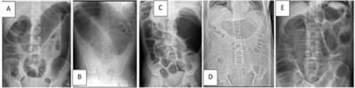
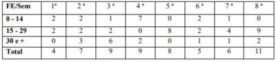
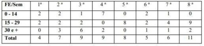
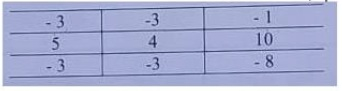
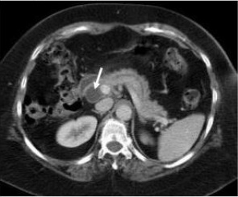

Questão 1 · Abdome Agudo Obstrutivo · Exames de Imagem · 4000128453Homem, 63 anos, em pós-operatório de colectomia total. Evolui com íleo paralítico prolongado e hiponatremia (Na: 123 mEq/L). Qual das radiografias de abdome abaixo é compatível com o quadro do paciente da questão?

A Imagem A do enunciado.
B Imagem B do enunciado.
C Imagem C do enunciado.
D Imagem D do enunciado.
E Imagem E do enunciado.
Questão 2 · Estudos de CasoControle · 4000047808Para realizar um estudo sobre a associação entre a exposição a produtos de óleo de petróleo e leucemia, utilizou-se o seguinte procedimento: Aplicou-se um questionário a 30 pessoas internadas com leucemia em um hospital localizado no litoral nordestino. O mesmo questionário foi aplicado a 30 pacientes internados para tratamento decorrente de doenças traumatológicas no mesmo hospital. O desenho epidemiológico é do tipo
A Coorte.
B Caso Controle.
C Correlação Ecológica.
D Transversal.
E Série de Casos.
Questão 3 · Associação de Testes Diagnósticos testes diagnósticos múltiplos · 4000047793Duas mil e quatrocentas mulheres foram observadas por um período de tempo para se avaliar a associação entre o uso de dispositivo intrauterino e dispareunia. Destas, 1900 não usavam dispositivos. Observou-se que 100 mulheres desenvolveram Dispareunia, das quais 30 estiveram expostas ao uso de dispositivos. Qual o valor da medida de associação?
A 0,8
B 3
C 9,3
D 3,3
E 1,6
Questão 4 · Estudos de Coorte · 4000047779Duas mil e quatrocentas mulheres foram observadas por um período de tempo para se avaliar a associação entre o uso de dispositivo intrauterino e dispareunia. Destas, 1900 não usavam dispositivos. Observou-se que 100 mulheres desenvolveram Dispareunia, das quais 30 estiveram expostas ao uso de dispositivos. Qual o tipo de estudo epidemiológico utilizado?
A Coorte
B Caso Controle
C Correlação Ecológica
D Transversal
E Caso controle aninhado à coorte
Questão 5 · Principais medidas de f requência de doenças · 4000047762Os primeiros casos da pandemia HIV/Aids foram registrados nos Estados Unidos da América. Segundo a Unaids/Brasil: (i) 74,9 milhões de pessoas foram infectadas pelo HIV desde o início da epidemia; (ii) 37,9 milhões de pessoas vivem com HIV no mundo, dos quais (iii) 36,2 milhões são adultos; 32 milhões de pessoas morreram de doenças relacionadas à Aids desde o início da epidemia, em 1982; 1,7 milhões de novas infecções foram registradas em 2018. Sobre os descritos, analise os itens abaixo: I. A maioria dos dados são relativos à prevalência. II. Existe uma medida de incidência. III. É possível calcular a taxa de letalidade do HIV para a Aids. IV. Os adultos representam 95,5% das pessoas infectadas. V. É possível calcular a taxa média anual da infecção. Assinale a alternativa CORRETA.
A I, II, III, IV e V estão corretos.
B Apenas I, II, IV e V estão corretos.
C Existem dois incorretos.
D Apenas III está incorreto.
E Apenas V está incorreto.
Questão 6 · Erros Sistemáticos ViésVieses · 4000047738Qual o estudo mais vulnerável ao viés decorrente da duração da doença?
A Coorte
B Caso Controle
C Relato de Caso
D Transversal
E Intervenção
Questão 7 · Estado de Portador · Medicina Preventiva · Epidemiologia · 4000047723Sobre "portadores de doenças", analise os itens abaixo: I. São imunes à doença em virtude de uma infecção adquirida previamente. II. Apresentam imunidade passiva em decorrência de mecanismos naturais ou artificiais. III. Albergam agentes infecciosos específicos na ausência de doença clinicamente discernível e servem como potenciais fontes de infecção. IV. Apresentam forma aguda da doença e servem de fonte potencial de infecção de susceptíveis. V. Encontram-se no período de convalescência. Assinale a alternativa CORRETA.
A I, II, III e IV estão corretos.
B Apenas III e IV estão corretos.
C Existe, apenas, um correto.
D Existem, apenas, três corretos.
E Apenas IV está correto.
Questão 8 · Investigação de Surtos · 4000047707No quadro a seguir, está indicado o número de casos de Salmonelose por Faixa Etária (FE) em anos e as semanas (Sem) de ocorrência da doença. Um valor semanal superior duas vezes à média aritmética é considerado critério de alarme e necessita de investigação. Com base nas informações contidas no quadro, responda a questão. Assinale a alternativa que contém a(as) faixa(s) etária(s) (FE) que ultrapassa(m) o critério de alarme.

A Todas as FE
B 0-14 e 15 - 29
C Apenas 15 - 29
D Apenas 0 - 14
E 0-14 e 30 e +
Questão 9 · Investigação de Surtos · 4000047687No quadro a seguir, está indicado o número de casos de Salmonelose por Faixa Etária (FE) em anos e as semanas (Sem) de ocorrência da doença. Um valor semanal superior duas vezes à média aritmética é considerado critério de alarme e necessita de investigação. Com base nas informações contidas no quadro, responda a questão. Quais foram as semanas que necessitaram de investigação?

A 4ª, 5ª e 8ª, apenas
B 3ª, 4ª, 5ª e 8ª
C 5ª e 8ª, apenas
D 3ª e 5ª, apenas
E 3ª, 4ª e 5ª, apenas
Questão 10 · Coef iciente ou Taxa de Mortalidade Inf antil · 4000047661Uma das maneiras de mensurar a saúde infantil é mediante o cálculo de indicadores de mortalidade infantil. Sobre o Coeficiente de Mortalidade Infantil (CMI), leia as afirmativas abaixo: I. No denominador do CMI, está o número de nascidos vivos. II. Mede o risco de uma criança, nascida viva, morrer antes de completar um ano de idade. III. No componente neonatal precoce, consideram-se os óbitos ocorridos antes de 28 dias completos. IV. A tendência do CMI no Brasil tem-se mostrado decrescente, segundo estatísticas recentes do IBGE. Para o ano de 2017, no Brasil, esse coeficiente estava em torno de 9. V. No denominador, está o número de óbitos fetais. Assinale a alternativa CORRETA.
A I, II, III, IV e V estão corretas.
B Apenas I, II, III e IV estão corretas.
C Existem, apenas, duas incorretas.
D Existem três incorretas.
E Apenas a IV está incorreta.
Questão 11 · Declaração de Nascido Vivo DN · 4000047643O Ministério da Saúde do Brasil segue a definição de "Nascimento Vivo" adotada pela Organização Mundial de Saúde. Sobre a necessidade de ser considerado "nascido vivo", analise as afirmativas abaixo: I. A duração mínima da gestação seja de seis semanas. II. Apresente pulsação do cordão umbilical. III. Ocorra a presença de sinal vital somente após desprendimento da placenta. IV. Apresente batimentos do coração. V. Apresente movimentos efetivos dos músculos de contração voluntária. Assinale a alternativa CORRETA.
A I, II, III, IV e V estão corretas.
B Apenas II, III, IV e V estão corretas.
C Existem, apenas, duas incorretas.
D Existem três incorretas.
E Apenas III está incorreta.
Questão 12 · Princípios f undamentais · 4000047626Sobre "Princípios Fundamentais" estabelecidos no Código de Ética Médica, leia as sentenças abaixo: I. O médico comunicará às autoridades competentes quaisquer formas de deterioração do ecossistema prejudiciais à saúde e à vida. II. A Medicina não pode, em nenhuma circunstância ou forma, ser exercida como comércio. III. O trabalho do médico não pode ser explorado por terceiros com objetivos de lucro, finalidade política ou religiosa. IV. O médica terá, para com os colegas, respeito, consideração e solidariedade, sem se eximir de denunciar atos que contrariem os postulados éticos. V. O médico empenhar-se-á em melhorar os padrões dos serviços médicos e em assumir sua responsabilidade com relação à saúde pública, à educação sanitária e à legislação referente à saúde. Assinale a alternativa CORRETA.
A I, II, III, IV e V estão corretas.
B Apenas IV está correta.
C Existem, apenas, duas incorretas.
D Existem, apenas, três incorretas.
E Apenas II está incorreta.
Questão 13 · Conceitos f undamentais em bioética · 4000047610Hipócrates, médico grego, considerado o "Pai da Medicina", deixou como legado "o Juramento de Hipócrates", um importante marco para a ética médica. Por outro lado, a Teoria Principalista, marco moderno da Bioética, se assenta em quatro princípios, dois dos quais emanados diretamente do juramento. Quais são eles?
A Justiça e Igualdade
B Justiça e Autonomia
C Beneficência e Não-maleficência
D Sigilo e Respeito
E Fidelidade e Confidência.
Questão 14 · Princípios e Diretrizes do SUS na Constituição Federal · 4000047597Os princípios reguladores do Sistema Único de Saúde foram estabelecidos na Constituição Federal (CF) de 1988. O artigo 199 da CF estabelece que a assistência à saúde é livre à iniciativa privada. Sobre esse artigo, leia as afirmativas abaixo: I. As instituições privadas poderão participar de forma complementar do Sistema Único de Saúde. II. As diretrizes para as instituições privadas serão estabelecidas mediante contrato de direito privado ou convênio. III. A preferência será para as entidades filantrópicas e as sem fins lucrativos. IV. É vedada a destinação de recursos públicos para auxílios ou subvenções às instituições privadas com fins lucrativos. V. É vedada a participação direta ou indireta de empresas ou capitais estrangeiros na assistência à saúde no País, salvo nos casos previstos em lei. Assinale a alternativa CORRETA.
A I, II, III, IV e V estão corretas.
B Apenas I, II, III e IV estão corretas.
C Existem apenas duas incorretas.
D Existem, apenas, três incorretas.
E Apenas a II está incorreta.
Questão 15 · Princípios e Diretrizes do Sistema Único de Saúde SUS · 4000047582Três modalidades de proteção social em saúde estão historicamente estabelecidas: Seguro Social, Seguridade Social e Assistência Social. Qual dos princípios e diretrizes do SUS é basilar para caracterizar o modelo de Seguridade Social?
A Universalidade
B Regionalização
C Igualdade
D Integralidade
E Participação da Comunidade
Questão 16 · Vigilância Ambiental · 4000047571No segundo semestre deste ano de 2019, o litoral de estados do Nordeste brasileiro foi acometido de um "desastre ambiental" provocado pelo aparecimento de óleo derivado de petróleo. Entidades e instituições têm sugerido várias medidas e recomendações para o enfrentamento do problema do ponto de vista da saúde individual e coletiva. Considerando-se que é um problema inusitado e, portanto, com poucos conhecimentos estabelecidos cienti camente sobre as consequências da exposição a essas substâncias contidas no óleo, essas medidas adotadas se baseiam no princípio da(do)
A Promoção à Saúde.
B Prevenção Primária.
C Incerteza.
D Precaução.
E Caos.
Questão 17 · Programa Mais Médicos Programa Médicos pelo Brasil · 4000047561Assistência à Saúde (Projeto Mais Médicos para o Brasil) e do eixo de ações de Melhoria da Infraestrutura da Atenção Básica, o programa atua no eixo da Educação Médica. Sobre esse eixo, leia as sentenças abaixo relativas a objetivos e normas estabelecidas pelo PMM. I. Ampliar a inserção do médico em formação nas unidades de atendimento do SUS, desenvolvendo seu conhecimento sobre a realidade da saúde da população brasileira. II. Fortalecer a política de educação permanente com a integração ensino-serviço por meio da atuação das instituições de educação superior na supervisão acadêmica das atividades desempenhadas pelos médicos. III. Promover a troca de conhecimentos e experiências entre pro ssionais da saúde brasileiros e médicos formados em instituições estrangeiras. IV. A autorização para o funcionamento de curso de graduação em Medicina, por instituição de educação superior privada, será precedida de chamamento público pelo Ministro de Estado da Educação, com pré-seleção dos Municípios para a autorização de funcionamento de cursos ouvindo o Ministério da Saúde. V. Ao menos 30% (trinta por cento) da carga horária do internato médico na graduação serão desenvolvidos na Atenção Básica e em Serviços de Urgência e Emergência do SUS, respeitando-se o tempo mínimo de 2 (dois) anos de internato, a ser disciplinado nas diretrizes curriculares nacionais. Assinale a alternativa CORRETA.
A I, II, III, IV e V estão corretas.
B Apenas I, II, III e IV estão corretas.
C Existem, apenas, duas incorretas.
D Existem três incorretas.
E Apenas IV está incorreta.
Questão 18 · Variável discreta · Variável contínua · Variável nominal · 4000047543O sexo, o número de doses de vacinas anteriormente aplicadas e o peso das crianças são, respectivamente, variáveis do tipo
A nominal, discreta e contínua.
B ordinal, discreta e discreta.
C discreta, discreta e discreta.
D ordinal, contínua e discreta.
E nominal, contínua e contínua.
Questão 19 · Mediana · Média · Moda · 4000047536A secretaria municipal de saúde de uma cidade brasileira registrou, nos últimos sete meses, a seguinte quantidade de doses de vacinas aplicadas contra o sarampo: 1.100; 1.400, 1.900, 1.700; 1.800; 1.100 e 800 doses. Quais são os valores da média aritmética, da mediana e da moda das doses de vacinas aplicadas nos sete meses, respectivamente?
A Os valores das três medidas são coincidentes.
B 1.400; 1.100; 1.100.
C 1.400; 900; 1.900.
D 1.400; 1.400; 1.100.
E Não é possível calcular uma das três medidas solicitadas.
Questão 20 · Indicação · Indicação · Indicações · 4000047521O calendário vacinal, adotado pelo Ministério da Saúde do Brasil em 2019, recomenda que, ao nascerem, as crianças devem ser vacinadas contra; I. Rotavírus. II. Tuberculose (BCG). III. Poliomielite. IV. Caxumba. V. Hepatite B. Está CORRETO, apenas, o que se afirma em
A I, II e III.
B II.
C III.
D II e V.
E I.
Questão 21 · Indicação · 4000047502Neste ano (2019), está acontecendo um aumento na ocorrência de casos de Sarampo no Brasil, tendo sido registrados, inclusive, óbitos decorrentes dessa doença. O estado de São Paulo é o mais atingido. No sábado, dia 19 de outubro deste ano, foi realizado, em todo o país, o "Dia D", uma parceria do Ministério da Saúde com as secretarias estaduais e municipais de saúde, que teve como objetivo reforçar a importância da vacinação contra o sarampo em crianças de
A seis meses a menores de 1 ano de idade.
B seis meses a menores de 5 anos de idade.
C doze meses a menores de 5 anos de idade.
D menores de um ano de idade.
E seis a dezoito meses de idade.
Questão 22 · Diagnóstico · Doença de Hirschsprung · Pseudoconstipação do lactente · 4000047489Leiam os três casos clínicos abaixo: Caso 1: Lactente de 2 meses, com genitora referindo di culdade para evacuar, com frequência média a cada 3 a 5 dias. Está em aleitamento materno exclusivo sob livre demanda. Sem história de vômitos ou dor abdominal. Quando evacua, as fezes têm aspecto pastoso. Ganho pôndero-estatural adequado e, ao exame, não foi observada dor ou distensão abdominal. Toque retal com fezes de consistência normal na ampola. Caso 2: Criança de 1 ano, com queixa de distensão abdominal e di culdade para evacuar desde o nascimento. Genitora refere que é comum o menor apresentar quadro de inapetência e vômitos. Nos antecedentes, mãe refere atraso na eliminação do mecônio. Apresenta ganho pôndero-estatural inadequado para a faixa etária. Ao exame, observa-se abdome distendido com eliminação de fezes explosivas ao toque retal. Caso 3: Paciente de 5 anos com história de di culdade para evacuar há 6 meses. Genitora refere que o paciente evacua, em média, 1 vez por semana, apresenta comportamento retentivo, muitas vezes referindo ""medo de fazer cocô porque sente dor"". Quando evacua, as fezes são bastante volumosas e chegam a entupir o vaso sanitário. Apresenta ganho pôndero-estatural adequado.Ao exame, apresenta fezes endurecidas ao toque retal. Sobre esses casos, assinale a alternativa CORRETA.
A Os casos 1 e 3 necessitam de tratamento medicamentoso, e o 2, provavelmente, necessitará de intervenção cirúrgica
B O caso 1 descreve uma situação fisiológica. Os casos 2 e 3 descrevem quadros de constipação funcional, sem sinais de alarme.
C O caso 1 evidencia uma situação fisiológica. O caso 2 mostra uma constipação de etiologia orgânica. O caso 3, provavelmente, se trata de uma constipação crônica funcional.
D O caso 1 é um quadro fisiológico. O caso 2, provavelmente, se refere a um paciente com constipação funcional. O caso 3 evidencia um paciente com constipação de provável etiologia orgânica.
E Os casos 1, 2 e 3 necessitam de tratamento medicamentoso.
Questão 23 · Orientações gerais de puericultura Sinais de alerta · 4000047461A tecnologia digital incorpora benefícios e malefícios à rotina das crianças e adolescentes. O bom senso e a informação adequada devem ser enfatizados pelos pediatras para as famílias, crianças e adolescentes. Sobre esse assunto, a Sociedade Brasileira de Pediatria recomenda que
A o limite do tempo de exposição às mídias seja, no máximo, de uma hora por dia para crianças entre dois a cinco anos de idade.
B a duração total/dia do uso de tecnologia digital não precisa ser limitada e proporcional às idades e às etapas do desenvolvimento, desde que sejam equilibradas com atividades ao ar livre.
C crianças, independente da idade, podem fazer uso de televisão ou computador nos seus próprios quartos, desde que sejam estabelecidos limites de horários para uso e na presença dos pais.
D crianças com mais de quatro anos já conseguem separar a fantasia da realidade, portanto jogos online com cenas de tiroteios ou desastres podem ser utilizados a partir dessa idade, com supervisão dos pais.
E crianças, independente da idade, não podem fazer uso da tecnologia digital, mesmo que esse tempo seja limitado pelos pais.
Questão 24 · Situações em que há restrições ao aleitamento materno · Leite humano X outros leites · 4000047450A amamentação estabelece o vínculo entre mãe e lho, sendo fator importante ao desenvolvimento da criança. Com relação a esse assunto, analise as alternativas subsequentes e assinale a CORRETA.
A A OMS recomenda que mulheres portadoras do vírus da hepatite C não devem amamentar devido ao risco de transmissão do vírus pelo leite materno.
B O primeiro leite, o colostro, é fundamental na saúde do lactente, especialmente por ser mais rico em proteínas e betacaroteno.
C O leite humano, comparado ao leite de vaca integral, apresenta um teor de ferro maior, porém com menor disponibilidade. Após 6 meses, as crianças em aleitamento materno devem receber suplementação de ferro.
D O leite humano possui um nutriente, os oligossacarídeos neutros, que favorecem o desenvolvimento de uma flora intestinal específica, tornando o lactente menos suscetível às infecções do tubo digestório.
E O leite materno possui anticorpos que são transferidos da mãe para o filho, caracterizando a imunidade do tipo celular.
Questão 25 · Classif icação · Tratamento · 4000047433De acordo com o IV Consenso Brasileiro de Rinites, assinale a alternativa que melhor correlaciona a classificação da rinite e seu respectivo tratamento. 1. Rinite Intermitente Leve; 2. Rinite Intermitente Moderada / Grave; 3. Rinite Persistente Leve; 4. Rinite Persistente Moderada / Grave; A. Anti-histamínico oral AH1; B. Antileucotrieno; C. Corticoide tópico nasal; 4. Corticoide oral. Assinale a alternativa que indica a associação CORRETA.
A 1B – 2D – 3A – 4C
B 1A – 2B – 3C – 4C
C 1D – 2C – 3B – 4A
D 1C – 2D – 3C – 4B
E 1B – 2A – 3D – 4B
Questão 26 · Transmissão vertical do HIV · 4000047413Recém-nascido termo nasceu de parto vaginal, com peso adequado para idade gestacional e sem intercorrências. Genitora não fez pré-natal, referindo que não sabia estar grávida. No momento do parto, foram realizados exames de rotina, tendo o teste rápido para sí lis sido não reagente, e o teste rápido para o HIV, reagente. Exame físico normal. NÃO faz parte da conduta inicial desse paciente:
A Banho em água corrente na sala de parto.
B Administração de zidovudina 4mg/kg/dose, via oral.
C Administração de nevirapina 1,2ml, via oral.
D Solicitar hemograma e dosagem de AST e ALT.
E Solicitar sorologia para HIV por método Elisa.
Questão 27 · O Recémnascido prétermo tardio · 4000047402Recém-nascidos termo precoce são os que nascem entre 37 semanas e 38 semanas e 6 dias. Considerando a epidemiologia, uma comparação com os maiores de 39 semanas e a maior morbimortalidade desse grupo etário, é CORRETO afirmar que
A nos últimos anos, houve declínio do número de nascimentos de termos precoces e aumento proporcional dos nascidos com mais de 39 semanas.
B o aumento de taxa de parto cesáreo e da indução de trabalho de parto contribuiu para o aumento do número de RN termo precoce.
C o número de gestações múltiplas não parece ter relação com a maior ocorrência de RN termo precoce.
D os RN termo precoce apresentam maior prevalência de taquipneia transitória e menor prevalência de hipertensão pulmonar persistente.
E os RN termo precoce apresentam mais hipoglicemia e dificuldade de sucção, porém menor taxa de incidência de sepse neonatal.
Questão 28 · Persistência do canal arterial · 4000047388Quanto às repercussões pulmonares e sistêmicas da Persistência do Canal Arterial (PCA) em recém-nascidos, é CORRETO afirmar que
A ocorre aumento do fluxo sanguíneo e edema pulmonar relacionados a importante fluxo direito-esquerdo pelo canal arterial.
B há aumento da pré-carga do ventrículo esquerdo, acarretando aumento da pressão diastólica final nesse ventrículo e da pressão capilar pulmonar.
C apesar da maior ocorrência em prematuros, a PCA não foi relacionada com um aumento do risco de displasia broncopulmonar.
D há aumento do fluxo sistêmico, especialmente para rins e circulação mesentérica, o que se associa com maior risco de enterocolitenecrosante.
E a redução do fluxo sistêmico pode funcionar como fator protetor para hemorragia intracraniana do prematuro com PCA.
Questão 29 · Diagnóstico · 4000047375Recém-nascido de 32 semanas de idade gestacional e 1 hora de vida apresenta desconforto respiratório. Nasceu de parto vaginal após genitora chegar em período expulsivo a serviço de emergência obstétrica. Apresentou Apgar1':7 e 5':9 e recebeu ventilação com pressão positiva ao nascer. Exame físico: estado geral regular, dispneico, TSC + e TIC +, gemente, corado, hipoativo. AR: murmúrio vesicular presente, sem ruídos, pouca expansibilidade torácica, FR: 74 ipm, SatO₂ 91% em CPAP com FiO₂50%. Uma radiografia de tórax desse paciente deve mostrar
A retificação de arcos costais com campos pulmonares limpos.
B broncograma aéreo e infiltrado retículo granular fino e difuso.
C pneumotórax e enfisema pulmonar.
D broncograma aéreo e atelectasia lobar à direita.
E infiltrado nodular grosseiro e irregular com áreas de hipoinsuflação.
Questão 30 · Tratamento e prevenção · Diagnóstico · 4000047364Adolescente de 13 anos, masculino, previamente hígido, queixa-se de febre há 10 dias associada à dor em joelho direito e punho esquerdo. Há 24 horas, vem apresentando tosse seca e falta de ar. Relata que, há 3 semanas, apresentou dor de garganta e cou bem com o uso de ibuprofeno. Dados positivos do exame físico: dor à mobilização do joelho direito e do punho esquerdo, sem limitação na amplitude do movimento, nem calor ou hiperemia local. Aparelho respiratório com estertores nos em bases e FR: 40irpm. Aparelho cardiovascular: ritmo cardíaco regular em 3 tempos, frêmito palpável em foco mitral e sopro holosistólico (4+/6+) em foco mitral com irradiação para axila, FC: 120bpm, PA: 110x70mmHg, pulsos cheios, extremidades aquecidas. Abdome: fígado palpável a 3 cm do rebordo costal direito. Qual a melhor combinação de exames complementares e tratamento inicial para o caso dentre as alternativas abaixo?
A ASO, Rx de tórax, ECG e ecocardiograma / ácido acetilsalicílico, furosemida e captopril.
B ASO, PCR, VHS, Rx de tórax, ECG e ecocardiograma / prednisona e furosemida.
C Cultura de orofaringe, PCR, VHS, Rx de tórax e ECG / ácido acetilsalicílico, furosemida e carvedilol.
D Cultura de orofaringe, Rx de tórax, ECG e ecocardiograma / prednisona, furosemida e digoxina.
E Cultura de orofaringe, ASO, PCR, VHS, Rx de tórax e ECG / prednisona, ácido acetilsalicílico, furosemida e carvedilol.
Questão 31 · Tuberculose Latente · 4000047344Pré-escolar de 4 anos, masculino, é levado à Unidade Básica de Saúde, por orientação médica, pois há uma semana seu pai teve diagnóstico de Tuberculose Pulmonar e faleceu logo em seguida. Menor assintomático. Recebeu BCG ao nascer. Qual a conduta mais adequada para essa criança?
A Realizar inicialmente PT (prova tuberculínica) e, se PT = 4mm, realizar Rx de tórax e, se for normal, tratar para ILTB (infecção latente por tuberculose).
B Realizar inicialmente PT e, se for = 10mm, realizar Rx de tórax e, se for alterado, tratar para tuberculose ativa.
C Realizar inicialmente Rx de tórax e, se for normal, realizar PT; se for = 8mm, repetir PT em 8 semanas, e, se não houver conversão da PT, dar alta com orientações.
D Realizar PT e Rx de tórax, se PT = 4mm e Rx de tórax normal, dar alta com orientações.
E Realizar PT e Rx de tórax, se PT = 5mm e Rx de tórax normal, tratar para ILTB.
Questão 32 · Tratamento · Diagnóstico · Inf ectologia · 4000047337Escolar de 9 anos, masculino, é levado à emergência pediátrica, com queixa de febre, cefaleia, anorexia, dor abdominal difusa e náuseas há 8 dias. Mora na zona rural de Igarassu, cidade do litoral de Pernambuco, em casa de taipa, sem água encanada nem saneamento básico, tendo o hábito de jogar futebol descalço em campo de barro ao lado do rio, onde toma banho com os amigos. Ao exame, apresenta palidez 1+/4+, abdome levemente doloroso à palpação em hipocôndrio direito, com fígado palpável a cerca de 4 cm do RCD. Diante das possibilidades de diagnóstico diferencial, qual a melhor combinação de exames complementares e tratamento?
A Hemograma e coprocultura / ceftriaxona 100mg/kg/dia durante 7 dias
B Hemograma e parasitológico de fezes (técnica de Kato-Katz) / praziquantel 60mg/kg, dose única
C Hemograma e parasitológico de fezes / metronidazol 30mg/kg/dia durante 21 dias
D Detecção de anticorpos anti-Trypanosoma Cruzi das classes IgG e IgM / nifurtimox 15mg/kg/dia durante 60 dias
E Hemograma e PCR para Leptospira / cloranfenicol 100mg/kg/dia por 7 dias
Questão 33 · Abordagem sindrômica · 4000047304Adolescente de 15 anos, feminino, procura Unidade Básica de Saúde com queixa de ferida em vulva há 7 dias. Relata sexarca aos 13 anos, 5 parcerias sexuais nos últimos 6 meses e não usa preservativos. Faz uso regular de anticonceptivo hormonal injetável; última menstruação há 15 dias. Exame físico da região genital: presença de úlcera indolor, endurecida, sem secreção em grande lábio esquerdo. Linfonodos inguinais palpáveis, broelásticos, móveis indolores, o maior medindo 2,0 x 2,0cm. Não há disponibilidade para a realização de exame bacterioscópico da lesão. Qual a conduta mais adequada para o caso?
A Doxiciclina 100mg, 12/12h por 21 dias + aciclovir 200mg 5x/dia por 7 dias.
B Benzilpenicilina benzatina 2,4 milhões de UI IM, dose única + aciclovir 200mg 5x/dia por 7 dias.
C Azitromicina 500mg, 2 comprimidos dose única + doxiciclina 100mg, 12/12h por 21 dias.
D Azitromicina 500mg, 2 comprimidos dose única + benzilpenicilina benzatina 2,4 milhões de UI IM, dose única.
E Benzilpenicilina benzatina 2,4 milhões de UI IM, Semanal, por 3 semanas
Questão 34 · Diagnóstico do Autismo · Transtorno do Espectro Autista TEA · 4000047292Um novo relatório do Centro de Controle e Prevenção de Doenças (CDC) de 2018, dos Estados Unidos, mostrou um aumento de 15% no número de crianças com determinada doença neurológica, em relação aos dois anos anteriores. Isso significa 1 caso para cada 59 crianças. À qual doença o texto se refere?

A Epilepsia
B Transtorno do espectro autista
C Hipóxia neonatal
D Transtorno e déficit de atenção e hiperatividade
E Insônia
Questão 35 · Segurança da casa · Segurança no transporte · Epidemiologia · 4000047270De acordo com o relatório da OMS e UNICEF de 2008, mais de 800.000 crianças morreram vítimas de acidentes em todo o mundo... Calcula-se que, em 2020, esse número será 20% maior." A prevenção contra acidentes deve ser um tema sempre abordado nas consultas de puericultura pelo pediatra, em função dos dados alarmantes acima. Sobre esse tema, analise as assertivas abaixo: I. Em relação aos acidentes por submerssão, o uso de boias de braço ou de cintura são boas medidas preventivas a serem orientadas na consulta pediátrica de lactentes e pré-escolares. II. Intoxicações exógenas são frequentes, especialmente em crianças menores de 5 anos; devendo-se, dessa forma, aconselhar o não uso de remédios caseiros à base de plantas, sem orientação médica. III. Desestimular o uso de andadores, pois estes podem levar a quedas, com potencial risco de traumatismo cranioencefálico. IV. Em relação ao transporte seguro em automóveis, o uso de assento de segurança voltado para frente está indicado para crianças maiores de 1 ano, enquanto o assento de elevação é o dispositivo apropriado para crianças acima de 20-22 kg e até alcançar 145 cm de altura.
A III e IV estão incorretas.
B apenas I está correta.
C I e IV estão corretas.
D I, II e IV estão corretas.
E I está incorreta.
Questão 36 · Vacinas · 4000047256Lactente com diagnóstico de síndrome nefrótica por lesões mínimas, em uso de prednisolona (2 mg/kg/dia) há mais de 4 semanas. Cartão vacinal encontra-se desatualizado. Nesse momento, NÃO há contraindicações absolutas em realizar as vacinas listadas abaixo:
A Vacina pentavalente/pneumocócica 10-valente.
B Vacina meningocócica conjugada quadrivalente/vacina tetra viral.
C Vacina contra a hepatite A/vacina contra a varicela.
D Vacina contra a febre amarela/vacina meningocócica B.
E Vacina meningocócica B/ tríplice viral.
Questão 37 · Tratamento · 4000047244Em recente revisão sistemática realizada pelo Cochrane (ROBSINSON et al. 2019), evidenciou-se que os programas de saúde pública para tratar regularmente todas as crianças, incluindo aquelas assintomáticas, com remédios para desparasitação, especialmente as residentes em áreas endêmicas, não parecem melhorar parâmetros, como altura, hemoglobina, cognição, desempenho escolar ou mortalidade. No entanto, em situações especí cas, nas quais a criança apresenta diarreia, dor abdominal ou anemia ferropriva, uma investigação laboratorial deverá ser feita e, assim, direcionar o tratamento específico para o parasita encontrado. Em relação aos pacientes sintomáticos, confirmados com giardíase, assinale a alternativa que apresenta as opções terapêuticas com as melhores taxas de cura.
A Furazolidona por 7 dias ou albendazol por 5 dias
B Tinidazol ou metronidazol por 7 dias
C Ivermectinaou secnidazol em dose única
D Nitazoxanida por 3 dias ou levamisol dose única
E Levamisol dose única ou tiabendazol por 3 dias
Revisar: possível letra faltando em enunciado
Questão 38 · Perf il de f erro na anemia f erropriva · Classif icação das anemias Foco na f erropriva · 4000047233Lactente masculino de 7 meses e 5 dias de vida, nascido a termo, é atendido pela primeira vez, no ambulatório de puericultura de um hospital de referência em Recife. A família mudou-se de uma cidade do interior para a capital, há poucos dias. No atendimento, além de questionar sobre o parto, alimentação, vacinação e desenvolvimento da criança, a médica pediatra percebeu anemia (2+/4+) como único achado significativo ao exame físico. Dados antropométricos ao nascimento: Peso: 2.750 g / Comprimento: 48 cm / Perímetro cefálico: 34 cm Dados antropométricos atuais: Peso e comprimento entre -1 e -2 DP das curvas da OMS de peso por idade em meninos e comprimento por idade em meninos, respectivamente. Na anamnese alimentar do lactente do caso clínico acima, a pediatra identi cou que ele foi amamentado apenas nos primeiros 15 dias de vida, recebendo leite integral desde então, com adição de cereais. Até o momento, não tinha recebido orientações sobre a introdução do cardápio alimentar. Não está fazendo uso de nenhum suplemento. Genitora nega história de doenças hematológicas na família. Teste do pezinho normal. Diante da principal causa da anemia do menor em questão, o único resultado de exame que NÃO esperamos encontrar é o seguinte:
A níveis aumentados de hepcidina.
B hemoglobina abaixo de 11 g/dL.
C zinco-protoporfirina eritrocitária livre elevada.
D aumento dos receptores séricos de transferrina.
E baixa concentração de hemoglobina no reticulócito.
Questão 39 · Puericultura Geral · Gráf icos OMS Classif icação nutricional · 4000047218Lactente masculino de 7 meses e 5 dias de vida, nascido a termo, é atendido pela primeira vez, no ambulatório de puericultura de um hospital de referência em Recife. A família mudou-se de uma cidade do interior para a capital, há poucos dias. No atendimento, além de questionar sobre o parto, alimentação, vacinação e desenvolvimento da criança, a médica pediatra percebeu anemia (2+/4+) como único achado significativo ao exame físico. Dados antropométricos ao nascimento: Peso: 2.750 g / Comprimento: 48 cm / Perímetro cefálico: 34 cm Dados antropométricos atuais: Peso e comprimento entre -1 e -2 DP das curvas da OMS de peso por idade em meninos e comprimento por idade em meninos, respectivamente. Em relação aos aspectos antropométricos do lactente, admitindo crescimento médio normal e mesmo sem verificar os gráficos de crescimento, é CORRETO afirmar que
A o perímetro cefálico esperado para o menor é aproximadamente de 40 cm no momento da consulta.
B com os dados fornecidos sobre o peso e comprimento atuais, o menor poderá encontrar-se com risco de sobrepeso na curva do IMC (índice de Massa Corpórea) da OMS.
C uma boa estimativa atual de peso para o menor, em função dos dados de nascimento e da consulta do 7º mês, é de aproximadamente 8.700 g.
D o menor apresenta baixa estatura para a idade, no momento da consulta, apesar de ter nascido com um comprimento adequado.
E pelos dados fornecidos, tanto o peso quanto o comprimento do menor encontram-se à esquerda da mediana das curvas de peso x idade e comprimento x idade para o sexo masculino, respectivamente.
Questão 40 · Inf ectologia · Fase aguda · Fase aguda · 4000047201"A ciência caminha para a descoberta de novas vacinas e novas drogas antimicrobianas. Enquanto isso, permanece fundamental conhecermos os meios pelos quais essas doenças nos atingem e tomamos os cuidados para evitá-las". Perigos Ocultos nas Paisagens Brasileiras: como evitar doenças infecciosas. Stefan Cunha Ujvari, ed Senac, SP, 2019. A forma tradicional de transmissão dessa doença, quando foi identi cada no século passado, parece estar sendo superada pela ingestão de fezes em alimentos, como caldo de cana-de-açúcar ou açaí. Neste ano, dezenas de casos da forma aguda dessa doença em Pernambuco podem ter sido atribuídas a essa 'nova' forma de transmissão (oral). Adultos e crianças foram acometidos, apresentando sinais e sintomas, como febre por mais de sete dias, cefaleia, mialgia, edema de membros inferiores, exantema e até miocardite, o que torna as arboviroses um importante diagnóstico diferencial. Esse texto refere- se à fase aguda de uma doença infecciosa. O tratamento de escolha deve ser realizado com
A Oxamniquine.
B Praziquantel.
C Dietilcarbamazina.
D Glucantime.
E Benzonidazol.
Questão 41 · Vacina tetra viral · Vacina Tríplice Viral · Vigilância Epidemiológica · 4000047187Em relação às estratégias de vacinação para o sarampo, todas as afirmações abaixo estão corretas, EXCETO:
A O bloqueio vacinal seletivo deve ser realizado em até 72 horas, em todos os contatos susceptíveis do caso suspeito durante a investigação.
B Para crianças de seis a 11 meses e 29 dias, o Ministério da Saúde instituiu a chamada primeira dose da vacina tríplice viral, sendo realizada, nesse caso, a segunda dose aos 15 meses.
C As crianças com alergia à proteína do leite de vaca não deverão fazer a vacina do Laboratório Indiano.
D Deve-se vacinar todos os trabalhadores da saúde de qualquer idade que atuam no atendimento direto de pacientes com suspeita de infecções respiratórias.
E Durante as ações de bloqueio vacinal, recomenda-se vacinação seletiva, ou seja, se houver comprovação vacinal de uma criança ou adolescente (duas doses), não deve haver revacinação.
Questão 42 · Exames complementares · Quadro Clínico · 4000047174Paciente de 45 anos, G3 P3, com dismenorreia progressiva. Apresenta ainda menstruação com aumento significativo do número de dias e do volume de sangramento no período menstrual. O exame físico revelou um útero aumentado globalmente de volume, com consistência amolecida e útero doloroso à mobilização. De acordo com esse quadro, assinale a alternativa que revela a hipótese diagnóstica mais adequada e a melhor propedêutica para confirmação diagnóstica.
A Mioma, ultrassonografia.
B Pólipo, histeroscopia.
C Útero didelfo, histerossalpingografia.
D Adenomiose, anatomopatológico.
E Adenocarcinoma, curetagem.
Questão 43 · Critérios diagnósticos · Síndrome dos ovários policísticos · 4000047162Paciente, 26 anos, G0 P0, chega ao ambulatório de ginecologia com queixas de ausência de menstruação há seis meses. Apresenta-se com excesso de peso (IMC= 40), placas aveludadas e enegrecidas na região da nuca, associadas a pelos grossos no queixo, buço e região do tórax. Traz consigo uma dosagem sérica d (USG) não revela anormalidades na genitália interna. De acordo com esse quadro, assinale a alternativa CORRETA.
A O quadro reflete síndrome da anovulação crônica, pois contempla dois dos três critérios de Rotterdam.
B O quadro é compatível com androginismo isolado, uma vez que a paciente não possui ovários policísticos na USG.
C Deve-se realizar exame ecográfico seriado para diagnosticar a síndrome da anovulação crônica.
D Para se diagnosticar a síndrome do hiperandrogenismo, deve-se solicitar a dosagem de testosterona e androstenediona.
E A síndrome só é estabelecida, se o índice de androgênios livres for maior que 25 e o índice de Ferriman Gallwey menor que 15.
Questão 44 · Tipos e causas · 4000047148Mulher com 45 anos vai ao consultório de ginecologia com mama direita apresentando proliferação exofítica próxima à papila. Revela que o crescimento foi lento. O aspecto é friável de coloração vinhosa. A descarga papilar é serosanguinolenta, espontânea, unilateral e por um único orifício. Refere dor à palpação. O exame ecográ co demonstra segmento ductal dilatado, padrões hipoecoicos acoplados à parede com crescimento verrocoso. Esse quadro revela o seguinte tipo de tumor mamário:
A Fibroadenoma simples.
B Papiloma intraductal.
C Tumor Phyllodes.
D Hamartomas.
E Lipomas.
Revisar: possível letra faltando em enunciado
Questão 45 · Contraindicações · 4000047133Mulher de 36 anos, G3 P3, tabagista, etilista social, com parceiro xo há um ano, deseja interromper o uso de DIU de cobre e iniciar contracepção oral combinada. Procura o médico do posto de saúde que, prontamente, contraindicou o método desejado pela paciente. No interrogatório, a paciente ainda referiu ter pedra na vesícula, enxaqueca sem aura e hipertensão moderada que está controlada com medicações e dieta. Qual das alternativas reúne as contraindicações para o caso em questão?
A Idade de 36 anos e tabagista.
B Etilista com doença da vesícula biliar.
C Enxaqueca sem aura e etilista.
D Hipertensão moderada com 36 anos.
E Uso prévio de DIU em tabagistas.
Questão 46 · Classif icação · 4000047119Mulher de 30 anos de idade, G0 P0, instrutora de educação física, fumante de um maço de cigarros ao dia, chega ao ambulatório de ginecologia com quadro de dismenorreia progressiva há cinco anos associada à irregularidade menstrual. Tenta gestar por três anos sem sucesso. Já foi submetida à videolaparoscopia que evidenciou lesões endometrióticas disseminadas, de caráter recente no fundo de saco anterior. Sem endometriomas, cicatrizes ou aderências periovarianas. Também não foram observadas aderências peritubárias. Essa descrição é classificada, segundo ACOSTA, em
A mínima.
B leve.
C moderada.
D grave.
E gravíssima.
Questão 47 · Estadiamento · 4000047105Mulher de 30 anos, G5 P5, com queixa de sangramento genital durante o ato sexual, há três meses. Durante o exame ginecológico, foi observada lesão cervical de um centímetro em seu maior diâmetro, restrita ao colo uterino. A vagina se encontra livre de lesões, assim como os paramétrios. Considerando a possibilidade diagnóstica de neoplasia cérvice uterina, assinale a alternativa que representa o estadiamento adequado.
A Ia1
B Ib3
C Ib1
D IIa
E IIb
Questão 48 · Síndrome de Morris · 4000047087Mulher de 18 anos, virgem, com quadro de amenorreia primária, veio ao ambulatório com exames para serem avaliados: USG revelando ausência de útero, dosagem de testosterona normal, prolactina e TSH normais. Cariótipo 46, XY. Qual o provável diagnóstico para esse caso?
A Síndrome de Rokitansky
B Síndrome de Asherman
C Síndrome de Tunner
D Síndrome de Swyer
E Síndrome de insensibilidade androgênica
Questão 49 · Classif icação · 4000047065Paciente procura consultório ginecológico com queixa de ""bola"" na vagina, há seis meses. Durante o exame, foi realizado o POP-Q que demonstrou o seguinte cenário: De acordo com o estadiamento do POP-Q, qual o diagnóstico dessa paciente?

A Prolapso de parede anterior E I
B Prolapso de parede posterior E II
C Hipertrofia de colo uterino
D Prolapso de parede posterior E IV
E Prolapso de apical Estádio II
Questão 50 · Foliculogênese ovariana · 4000047049Durante o ciclo menstrual, todo o processo culmina com a preparação do folículo para a eclosão da camada super cial do ovário e captação pelas fímbrias. De acordo com o processo de foliculogênese, assinale a alternativa CORRETA.
A O desenvolvimento até a fase de folículo primordial independe dos níveis de gonadotrofinas.
B A principal característica da fase pré-antral é a diminuição dos receptores de FSH.
C Na fase antral, ocorre o aumento do estradiol com consequente feedback negativo para o LH.
D Na fase pré-ovulatória, acontece uma diminuição das concentrações androgênicas pelo aumento da conversão em estrógenos.
E O aumento dos estrógenos associados ao aumento do FSH e à diminuição do LH são os fenômenos necessários à ovulação.
Questão 51 · Ações do estrogênio e progesterona em outros órgãos · 4000047034Durante todo o processo do ciclo menstrual, a função bioquímica é transformar o colesterol, à base de esteroidogênese, em estradiol, estriol e estrona, envolvendo uma complexa associação de reações químicas. Das alternativas abaixo, qual representa uma função extragenital do esteroide estrogênico?
A Promover a hipotermia de sistema nervoso central.
B Diminuir a vasculatura cutânea.
C Reduzir as camadas de colágeno.
D Aumentar a atividade osteoclástica.
E Estimular a liberação de sódio e água.
Questão 52 · Altura uterina AU · Datação da gestação · 4000047025Pela regra do MacDonald, calcule a idade gestacional quando a altura de fundo uterino é de 30 cm.
A 30 semanas e 06 dias.
B 32 semanas.
C 33 semanas e 01 dias.
D 34 semanas e 02 dias.
E 35 semanas.
Questão 53 · Tipos de f órcipes · 4000047012Qual é o fórceps mais utilizado na obstetrícia?
A Simpson.
B Piper.
C Barton.
D Kielland.
E Elliot.
Questão 54 · Razão de Mortalidade Materna · 4000047002Quais são as mortes maternas que constam no numerador da Razão de Mortalidade Materna?
A Causas diretas, apenas.
B Causas diretas e indiretas.
C Causas diretas, indiretas e acidentais.
D Causas diretas, indiretas, acidentais e por suicídios.
E Causas diretas, indiretas e não declaradas.
Questão 55 · Morte f etal Óbito f etal OF · 4000046989Qual deve ser a conduta no caso de feto morto a termo em apresentação pélvica com antecedente de cesárea por sofrimento fetal agudo e que apresenta índice de Bishop de 9?
A Cesárea
B Descolamento das membranas e aguardar por 24 horas o início do trabalho de parto
C Indução do parto com misoprostol
D Indução do colo com sonda de Foley
E Indução do parto com ocitocina
Questão 56 · Conduta · 4000046982Oferecer às mulheres a opção do descolamento das membranas entre 38 e 41 semanas tem como objetivo diminuir a(o)
A procedência de cordão umbilical.
B sofrimento fetal agudo.
C parto instrumental.
D gravidez prolongada.
E hemorragia pós-parto.
Questão 57 · Avaliação do estreito superior · 4000046974Quando no toque vaginal, NÃO se consegue atingir o promontório, conclui-se que a bacia da mulher apresenta
A Diâmetro anteroposterior amplo.
B Diâmetro transverso amplo.
C Diâmetro transverso estreito.
D Diâmetro oblíquo amplo.
E Diâmetro oblíquo estreito.
Questão 58 · Doenças inf ecciosas na gestação HIV síf ilis hepatites herpes · Fatores de risco · 4000046960Qual das infecções a mulher apresenta mais risco de adquirir na gravidez do que quando não está grávida?
A Tricomoníase.
B Cervicite bacteriana.
C Sífilis.
D Candidíase.
E Vaginose.
Questão 59 · Sulf ato de magnésio · 4000046951Qual é a medicação que apresenta algum papel na neuroproteção ao concepto, diminuindo as chances de paralisia?
A Terbutalina.
B Sulfato de magnésio.
C Progesterona.
D Antagonistas de receptores de ocitocina.
E Inibidores da cicloxigenase.
Questão 60 · Predição e prevenção · 4000046940Em área onde a ingestão dietética de cálcio é baixa, recomenda-se durante a gestação a suplementação de cálcio para prevenção de
A trabalho de parto prematuro
B diabetes
C pré-eclâmpsia
D CIUR simétrico
E câimbras
Questão 61 · Hiperêmese gravídica · 4000046931Na gravidez, a síndrome de Wernick é uma complicação da seguinte doença:
A Placenta prévia
B Descolamento prematuro das membranas
C Gravidez prolongada
D Hiperêmese gravídica
E Doença hemolítica perinatal
Questão 62 · Cirurgia · Diretrizes de Tokyo · 4000046922De acordo com Os ''Guidelines de Tokyo 2018'', existem critérios para o diagnóstico adequado da colecistite aguda. Assinale a alternativa que contém um paciente com diagnóstico definitivo de colecistite aguda.
A Sinal de Murphy, microcálculos e febre
B PCR elevada, parede espessa e cálculo único ao USG
C Murphy ultrassonográfico, massa em HD e leucocitose
D Febre, > 48h de dor e leucocitose
E DHL elevada, vesícula dilatada ao USG e febre
Questão 63 · Insuf iciência adrenal secundária · Manif estações clínicas · 4000046915Mulher, 39 anos, portadora de artrite reumatoide e usuária crônica de 20mg de prednisona. Evolui com úlcera perfurada duodenal e peritonite. Na tentativa de evitar uma insu ciência adrenal aguda, o anestesista faz hidrocortisona endovenosa na indução. Quais sinais clínicos levantariam a suspeita dessa complicação?
A Hipercalemia e bradicardia
B Hipotensão e hiponatremia
C Insuficiência hepática e coma
D Hipocalcemia e sonolência
E Convulsão e hiperreflexia
Questão 64 · Manif estações Clínicas e Exame Físico · Cirurgia · 4000046904Homem, 19 anos, encaminhado para avaliação cirúrgica de apendicite aguda. Durante o exame clínico, o cirurgião pede para o paciente tossir, e este relata dor. Chamamos esse sinal de
A Dunphy.
B Rovsing.
C Lenander.
D Markle.
E Alvarado.
Questão 65 · Câncer de Cólon NãoPolipoide Hereditário · 4000046893O câncer colorretal hereditário não poliposo (HNPCC) pode ser diagnosticado através de testes genéticos e da aplicação dos critérios de Amsterdam II e Bethesda. Qual dos tumores extracolônicos abaixo NÃO faz parte dessa condição autossômica dominante?
A Intestino delgado
B Endométrio
C Pelve renal
D Ovário
E Tireoide
Questão 66 · Politrauma Ortopédico · 4000046884Num paciente politraumatizado, qual das fraturas abaixo significa um trauma grave (alta energia) com possível lesão de vários sistemas e elevada mortalidade?
A Afundamento/fratura de zigomático
B Fratura de escápula
C Fratura de ramo ísquio-pubiano
D Fratura transtrocantérica de fêmur
E Fratura de Colles.
Questão 67 · História Natural da Doença · 4000046875Mulher, 28 anos, realiza ultrassonogra a de abdome total para avaliar uma dor pélvica. O exame identi ca colelitíase. Em relação a esse diagnóstico, a paciente é assintomática. Na história natural dessa condição, é CORRETO afirmar que
A ela faz parte dos 30% da população mundial que é portadora de colelitíase.
B 80-85% dos portadores de colelitíase são assintomáticos.
C 10-15% dos pacientes podem evoluir para complicações graves, como pancreatite, coledocolitíase e icterícia obstrutiva.
D o risco cumulativo de se tornar sintomático, no sexo masculino, é de 10% ao ano.
E por ser mulher, após 20 anos, ela tem 90% de chance de se tornar sintomática.
Revisar: possível letra faltando em enunciado
Questão 68 · Temas Gerais em Cirurgia · Cirurgia · 4000046862Em seu famoso livro ""O século dos Cirurgiões"", Jürgen Thorwald descreve um período no qual a evolução da ciência cirúrgica vivenciou uma revolução. Assinale a alternativa que descreve o século do qual estamos falando e as principais conquistas que provocaram essa revolução.
A Século XVIII/ controle da dor e medicina baseada em evidência
B Século XVII/ desenvolvimento de materiais cirúrgicos e fios de sutura
C Século XIX/ técnicas de assepsia, antissepsia e anestesia geral
D Século XX/ cirurgia minimamente invasiva e terapia intensiva
E Século XVI/ abolição dos barbeiros-cirurgiões e dissecções anatômicas
Questão 69 · Tratamento cirúrgico curativo · Hepatocarcinoma CHC ou HCC Carcinoma Hepatocelular · 4000046851O hepatocarcinoma é o tumor hepático maligno primário mais comum. Existe uma gama de possíveis tratamentos para esse tipo de tumor: ressecção cirúrgica, transplante hepático, quimioembolização, ablação por radiofrequência e quimioterapia. Qual dos casos clínicos abaixo seria o paciente ideal para se indicar ressecção cirúrgica?
A Homem, 59 anos, Child A e tumor de 6cm no lobo esquerdo. Plaquetas: 130.000/mm³.
B Mulher, 38 anos, MELD 15 e 02 tumores no lobo esquerdo de 1,5 cm, usando TIPS.
C Homem, 47 anos. Lesão de 3cm em lobo direito e envolvimento da veia porta direita.
D Mulher, 61 anos. Lesão de 2cm em segmento III. Varizes de fino calibre e Child B.
E Homem, 29 anos, Child B e tumor de 4cm em lobo direito e esplenomegalia.
Questão 70 · Sintomas Atípicos · Indicações para o Tratamento Cirúrgico · Tratamento Farmacológico · 4000046836Homem, 31 anos, IMC: 33Kg/m², refere sensação de regurgitação amarga, pirose e rouquidão há 2 meses. Relata ainda salivação frequente, pigarro e dor de ouvido. Durante consulta cirúrgica para tratamento de doença de re uxo, foi avaliada a presença de sintomas esofágicos típicos, atípicos e sinais de alarme. Em relação a esse quadro, é CORRETO afirmar que
A existem sintomas clássicos de hérnia hiatal.
B existe um sintoma de alarme e devemos fazer endoscopia.
C existem 02 sintomas atípicos.
D não existe sinal de alarme e devemos proceder com o tratamento clínico.
E devido à predominância de sinais típicos, devemos indicar cirurgia antirrefluxo.
Questão 71 · Princípios da Cirurgia Oncológica · Tratamento do Adenocarcinoma Gástrico · Cirurgia · 4000046828Mulher, 39 anos. Submetida à gastrectomia total com linfadenectomia por adenocarcinoma, tipo anel de sinete, no corpo gástrico (grande curvatura). Para um adequado estadiamento patológico, a peça cirúrgica deve conter
A linfonodos periaórticos.
B margens cirúrgicas de 2cm.
C pelo menos 15 linfonodos.
D o baço.
E biópsia do fundo de saco de Douglas.
Questão 72 · Obstrução · Hemorragia Digestiva · Perf uração · 4000046819Homem, 48 anos, fumante. Queixa-se de dor epigástrica importante e náusea. Realizou endoscopia digestiva alta que evidenciou úlcera duodenal em parede anterior da 1ª porção. Iniciado tratamento com omeprazol, erradicação do H. pylori e medidas dietéticas. Orientou-se o paciente para a possibilidade de complicações cirúrgicas e da necessidade de cirurgia para o tratamento dessas complicações. Qual das complicações abaixo é a mais frequente?
A Sangramento
B Obstrução pilórica
C Malignização
D Perfuração
E Zollinger - Ellisson
Questão 73 · Lesões Nervosas · 4000046809Homem, 33 anos. Submetido à hernioplastia inguinal direita com tela pela técnica de Lichtenstein. Retorna para a revisão cirúrgica no 15Odpo, queixando-se de anestesia na região próximo-medial da coxa e raiz do pênis. Ao exame físico, observa-se a ausência do reflexo cremastérico. Qual nervo da região inguinal foi lesado?
A Ílio-hipogástrico
B Ílio-inguinal
C Genitofemoral
D Cutâneo femoral lateral
E Pudendo
Questão 74 · Acidose metabólica · 4000046799Homem, 19 anos, queda de moto levando a politraumatismo. Atendido numa unidade de emergência básica em Pesqueira/PE. Identi cado fratura pélvica, do colo do fêmur e choque. O médico de plantão solicita Ringer lactato para reposição volêmica. Entretanto, é informado que só dispõe de SF 0,9%. Na reanimação inicial, são necessários 4,5L para estabilização e transporte à unidade definitiva em Caruaru/PE. Nessa situação, qual distúrbio hidroeletrolítico o paciente tenderá a desenvolver?
A Alcalose hipoclorêmica
B Acidose hipercalêmica
C Alcalose hipernatrêmica
D Acidose hiponatêmica
E Acidose hiperclorêmica
Revisar: possível letra faltando em enunciado
Questão 75 · Complicações PósOperatórias · Cirurgia · 4000046787Os conhecimentos em anátomo- siologia têm grande relevância cirúrgica. Assinale a alternativa que elenca CORRETAMENTE o procedimento cirúrgico, a estrutura anatômica lesada e a complicação pós-operatória associada.
A Fundoplicatura a Nissen; lesão do nervo vago; bradicardia.
B Esplenectomia; lesão dos vasos gástricos curtos; necrose do antro gástrico.
C Esofagectomia trans-hiatal; lesão do nervo laríngeo recorrente; disfagia.
D Retossigmoidectomia; lesão do plexo hipogástrico; ejaculação retrógrada.
E Duodenopancreatectomia com preservação pilórica; lesão do nervo vago; retardo do esvaziamento gástrico.
Questão 76 · Diagnóstico etiológico da hiponatremia · 4000046741Homem, 63 anos, em pós-operatório de colectomia total. Evolui com íleo paralítico prolongado e hiponatremia (Na: 123 mEq/L). Nessa situação, a hiponatremia seria
A hipertônica e hipovolêmica.
B hipotônica e euvolêmica.
C hipotônica e hipovolêmica.
D hipertônica e hipervolêmica.
E normotônica e normovolêmica.
Questão 77 · Síndrome Compartimental Aguda · 4000046729Trabalhador da construção civil, 25 anos, vítima de esmagamento por parede de concreto. Está sendo avaliado no atendimento inicial para uma possível síndrome compartimental de membros. Assinale a alternativa que indica o(s) local(is) mais comumente afetado(s) por essa condição.
A Perna e antebraço
B Pé e mão
C Coxa
D Braço
E Pelve
Questão 78 · Diagnóstico por Imagem · 4000046720Homem, 58 anos, submetido à duodenopancreatectomia por adenocarcinoma de cabeça de pâncreas de 2,3 cm. A tomogra a computadorizada abaixo é do paciente da questão 22. Identi que a estrutura assinalada com a seta que é de importância para a avaliação cirúrgica do caso.

A Tumor
B Veia cava inferior
C Duodeno
D Veia mesentérica superior
E Colédoco
Questão 79 · Tratamento Adjuvante · 4000046693Homem, 58 anos, submetido à duodenopancreatectomia por adenocarcinoma de cabeça de pâncreas de 2,3 cm. Homem, 58 anos, submetido à duodenopancreatectomia por adenocarcinoma de cabeça do pâncreas de 2,3 cm. Qual dos esquemas quimioterápicos adjuvantes abaixo é o mais adequado para elevar a sobrevida desse paciente?
A FIOT
B FOLFOX
C Gencitabina
D FOLFIRINOX
E FOLFIRI
Questão 80 · Suporte avançado de via aérea · Princípios da Anestesiologia · Cirurgia · 4000046690Homem, 63 anos, sofreu trauma abdominal fechado por atropelamento. Foi indicado laparotomia de emergência. Você participa da equipe anestésica que irá realizar o procedimento. A anestesista sugere que a entubação será difícil e adota várias medidas para o sucesso da obtenção da via aérea. Assinale a alternativa que contém métodos de avaliação de uma via aérea difícil.
A Mallanpati e ASA
B LEMON e Cormack-Lehane
C Mallanpati e ASA
D LEMON e Hinchey
E MOANS e Cormack - Lehane
Questão 81 · Hidrocef alia de Pressão Normal · Quadro Clínico · 4000046676Um paciente de 75 anos vem há três meses com declínio cognitivo, incontinência urinária e di culdade de marcha, caracterizada por passos curtos e lentos, instabilidade postural principalmente ao virar o corpo que o levou a sofrer várias quedas. Qual o diagnóstico mais provável?
A Doença de Alzheimer
B Demência frontotemporal
C Tumor cerebral
D Estenose de carótida
E Hidrocefalia de pressão normal
Questão 82 · Manif estações articulares · Manif estações extraarticulares · Espondilite Anquilosante · 4000046668Um paciente de 27 anos refere ser portador de espondilite anquilosante. Qual dos achados abaixo provavelmente NÃO será observado nesse caso?
A HLA B27 Positivo
B Dor à palpação do tendão de Aquiles
C Dor lombar baixa que melhora com o repouso
D Uveite anterior
E Dactilite
Questão 83 · Quadro clínico da anemia megaloblástica · Causas de anemia megaloblástica · 4000046655Def iciência de vitamina B12 Uma paciente de 67 anos refere queixas de fraqueza, indisposição e dormência em membros inferiores. Ao exame físico, está pálida, com atro a de papilas linguais e hipoestesia em pés e pernas, com prejuízo da noção de posição segmentar. O hemograma revelou anemia com macrocitose e neutró los plurissegmentados. Qual, dentre as alternativas abaixo, é a causa mais provável da anemia nesse caso?
A Gastrite atrófica
B Hemólise crônica
C Dermatite exfoliativa
D Alcoolismo
E Cirrose hepática
Questão 84 · Diagnóstico · 4000046645Um paciente foi trazido para a emergência após ter sido vítima do desabamento do edifício onde morava. Ficou retido nos escombros por oito horas, antes de ser resgatado pelos bombeiros. Queixava-se de dor abdominal, mas a tomogra a foi normal. À admissão, foi diagnosticada uma fratura no fêmur direito e várias escoriações pelo corpo. Como a urina era muito escura, foi solicitado um sumário de urina que demonstrou presença de sangue, mas com sedimentoscopia normal. O paciente descrito na questão 16 evoluiu com melhora clínica após as medidas iniciais, mas 48 horas depois passou a apresentar dispneia e confusão mental. Ao ser reavaliado pelo plantonista da UTI, foram observadas hipoxemia e rash petequial em pescoço e face anterior do tórax. Qual o diagnóstico mais provável para o quadro atual?
A Embolia gordurosa
B Sepse
C Hemorragia intracraniana
D Lesão pulmonar por inalação de fumaça
E Pneumotórax hipertensivo
Questão 85 · Rabdomiólise · 4000046638Um paciente foi trazido para a emergência após ter sido vítima do desabamento do edifício onde morava. Ficou retido nos escombros por oito horas, antes de ser resgatado pelos bombeiros. Queixava-se de dor abdominal, mas a tomogra a foi normal. À admissão, foi diagnosticada uma fratura no fêmur direito e várias escoriações pelo corpo. Como a urina era muito escura, foi solicitado um sumário de urina que demonstrou presença de sangue, mas com sedimentoscopia normal. Que exame, dos citados abaixo, seria mais útil para esclarecimento diagnóstico quanto à alteração urinária?
A Gasimetria arterial
B Alanina aminotransferase
C Bilirrubinas
D Dosagem de porfirinas urinárias
E Creatinofosfoquinase
Questão 86 · Tosse crônica · Sinais de alarme · Pneumologia · 4000046627Uma paciente procura o ambulatório com queixas de tosse seca há quatro meses. É hipertensa, controlada com enalapril 20mg/dia e refere fumar um maço de cigarros/dia há 20 anos. Ao exame físico, a ausculta pulmonar é normal e PA = 140x90 mmHg. Assinale a melhor conduta para o caso nesse momento.
A Associar hidroclorotiazida ao esquema anti-hipertensivo.
B Trocar o enalapril por losartan.
C Associar amlodipina ao esquema.
D Associar omeprazol, já que a tosse provavelmente deve ser secundária a refluxo gastroesofágico.
E Associar beta2 agonista, já que a tosse deve ser manifestação de DPOC incipiente.
Questão 87 · Clínica Médica · Hepatologia · Introdução à Hepatologia · 4000046614Um paciente foi admitido à UTI com história de febre e calafrios, há 24 horas. À admissão, estava hipotenso, PA 60x40 mmHg, não tendo respondido à reposição de volume. Foi necessário o uso de noradrenalina por 24 horas. No dia seguinte, os exames laboratoriais mostravam: TGO 12930 UI/ml, TGP 9340 UI/ml, bilirrubina 2,8 mg/dl e fosfatase alcalina 1,5 vezes o limite superior do normal. Qual a provável explicação do quadro hepático?
A Icterícia transinfecciosa
B Isquemia hepática
C Hepatite viral aguda
D Colangite bacteriana
E Cirrose alcoólica descompensada
Questão 88 · Síndrome de lise tumoral SLT · 4000046606Um paciente com linfoma não Hodgkin B difuso de grandes células, com volumosos conglomerados linfonodais em mediastino e retroperitônio foi admitido para início de quimioterapia. Tendo em vista que seus níveis basais de DHL são cerca de três vezes o normal, ácido úrico 8,5 mg/dL e cálcio 6,8 mg/dl, qual das medidas abaixo NÃO estaria indicada no tratamento desse paciente?
A Rasburicase
B Alcalinização da urina
C Hidratação vigorosa (800 a 1000 ml/m² de superfície corporal/hora)
D Alopurinol
E Monitorização cardíaca por 72 horas
Questão 89 · Cardiologia · Bloqueadores dos canais de potássio · 4000046592Todas as alternativas abaixo são efeitos colaterais do uso prolongado de amiodarona por via oral, EXCETO
A Hipotensão.
B Pneumonite intersticial.
C Hipertiroidismo.
D Prolongamento do intervalo QT.
E Neuropatia óptica.
Questão 90 · Trombólise Endovenosa · 4000046584Uma paciente de 65 anos foi trazida para a emergência com uma queixa recente de hemiparesia esquerda. A tomogra a de crânio descartou hemorragia, e a paciente está sendo avaliada para uso de alteplase. Qual das condições abaixo NÃO é contraindicação para a terapia trombolítica?
A Endocardite infecciosa
B Neurocirurgia recente
C Plaquetas abaixo de 100.000/mm³
D Câncer gástrico
E INR de 1,5 em paciente usando warfarin
Questão 91 · Glomerulonef rite pósestreptocócica · Síndrome nef rítica · 4000046573Um paciente de 62 anos, previamente hígido, foi trazido para a emergência, com rebaixamento do nível de consciência. Familiares relatavam que ele vinha há uma semana com edema generalizado. Ao exame físico, ele apresentava níveis pressóricos muito elevados (PA 220 x 160 mmHg), edema de face e membros, sem sinais focais no exame neurológico. O único antecedente relevante era um episódio de erisipela cerca de 30 dias antes do início do quadro atual. Qual dos achados abaixo provavelmente NÃO seria encontrado nesse caso?
A Proteinúria = 4 g/ 24 horas
B Níveis séricos de C3 reduzidos
C Altos títulos de antiestreptolisina O
D Hemácias dismórficas no sumário de urina
E Cilindros hemáticos
Questão 92 · Síndrome Anticolinérgica · 4000046560Uma mulher de 31 anos que trabalha como auxiliar de serviços gerais em um hospital foi trazida para a emergência com suspeita de intoxicação exógena. Ela tem acesso a todos os setores do hospital; os funcionários da farmácia estão levantando os estoques para definir a falta de algum medicamento, mas essa informação ainda não está disponível. Ao exame, ela se apresenta agitada, em aparente delirium, com ushing facial, pele seca, hipertermia, midríase e taquicardia. O exame do abdome demonstra ausência de ruídos hidroaéreos e globo vesical palpável. Eletrocardiograma mostrou alargamento do complexo QRS. Com base nos dados do exame físico, qual o provável agente ingerido?
A Amitriptilina
B Morfina
C Diazepam
D Metanol
E Neostigmine
Questão 93 · Inf ecções relacionadas à assistência à saúde IRAS · Inf ectologia · Endof talmites · 4000046554Um paciente diabético de 60 anos foi admitido à unidade de terapia intensiva, com quadro de coma hiperosmolar não cetótico, há 15 dias. Evoluiu depois disso com íleo paralítico que requereu início de nutrição parenteral total há nove dias. Ontem de madrugada, ele apresentou calafrios, febre e hipotensão, mas a enfermagem não comunicou ao médico plantonista naquele momento. Não há sinais de infecção em outros sítios. Na manhã seguinte, você vai avaliar o paciente e percebe hiperemia no sítio de inserção do cateter jugular. Assinale a alternativa CORRETA com relação a esse caso.
A Você deve solicitar três amostras de hemocultura que deverão ser colhidas através do cateter central, no momento de nova bacteremia.
B Deve ser iniciado esquema antibiótico empírico logo após a coleta das culturas. A combinação de linezolida e meropenem seria uma boa opção para esse caso.
C Pensando em infecção de corrente sanguínea, é essencial a avaliação do ecocardiograma, independente do resultado da hemocultura.
D Como o paciente precisa manter a nutrição parenteral, o cateter deverá ser mantido, desde que se inicie antibioticoterapia imediatamente.
E Esse paciente tem risco elevado de infecção de corrente sanguínea por Candida, situação em que está indicada avaliação oftalmológica rotineira para a pesquisa de endoftalmite.
Questão 94 · Exames Endoscópicos · Exames Radiológicos · Exames Laboratoriais · 4000046541Um paciente de 30 anos, sabidamente portador de doença de Crohn de intestino delgado desde os 19 anos, procurou o hospital com queixas de piora da diarreia, associada à dor em cólicas em região periumbilical e distensão abdominal, tendo apresentado alguns episódios de vômitos na última semana. Dentre os exames abaixo, qual NÃO estaria indicado nesse momento para avaliar a atividade da doença?
A Dosagem de calprotectina fecal
B Proteína C reativa
C Endoscopia por cápsula
D Êntero-tomografia
E Êntero-ressonância
Questão 95 · Laboratório · Esclerose sistêmica · 4000046528Uma paciente de 40 anos vinha observando há alguns anos que a ponta dos dedos cava arroxeada ao lavar as mãos em água fria. Nos últimos meses, passou a referir intensa fadiga, edema e dor nas mãos e enrijecimento da pele das mãos e antebraços, além de limitação na abertura da boca. Foi examinada pelo médico que solicitou alguns exames. Assinale a alternativa CORRETA com relação à interpretação desses exames.
A Se o FAN vier positivo, deve-se pensar em associação com Lúpus eritematoso sistêmico.
B Os anticorpos antitopoisomerase e anticentrômero têm sensibilidade elevada, mas são pouco específicos para o diagnóstico de esclerodermia, pois comumente são encontrados em pacientes com fenômeno de Raynaud isolado.
C O anticorpo anticentrômero é detectado em mais de 80% dos casos da forma difusa da esclerodermia.
D O anticorpo antitopoisomerase I (anti-Sel 70) é preditor de mau prognóstico, sendo marcador de risco para o desenvolvimento de doença intersticial pulmonar.
E É comum a positividade para fator reumatoide e anti-CCP em pacientes com a forma difusa da esclerodermia.
Questão 96 · Inf arto agudo do miocárdio associado ao uso de drogas ilícitas · Cardiologia · 4000046519Um paciente de 35 anos, previamente hipertenso, estava em um festival de rock e fumou crack pela primeira vez. Cerca de 60 minutos depois, começou a sentir dor torácica de forte intensidade, apresentando palidez, palpitações e sudorese. Assinale a alternativa CORRETA em relação ao caso descrito.
A Caso o eletrocardiograma seja normal, deve-se solicitar tomografia de tórax com contraste.
B A doença coronariana relacionada ao uso de cocaína e seus derivados é observada após uso crônico; então, é pouco provável que esse paciente esteja com síndrome coronariana aguda.
C A lesão cardíaca é dependente de vasoconstricção coronária. O tratamento se baseia no uso de vasodilatadores como nitratos e bloqueadores dos canais de cálcio, não havendo necessidade de antiagregantes.
D Se a frequência cardíaca de admissão for maior que 120 bpm, deve ser feita infusão de metoprolol.
E Se houver elevação do segmento ST no eletrocardiograma e a dor não ceder após seis horas de terapia vasodilatadora, o paciente deverá ser submetido à angiografia coronária.
Questão 97 · Oxigenoterapia Domiciliar Prolongada ODP · 4000046502Um paciente de 70 anos, tabagista há 50 anos, tem queixas de dispneia progressiva que já exigiu algumas internações. Já está em uso de vários broncodilatadores, mas permanece sintomático. Sobre a indicação de oxigenioterapia domiciliar nesse caso, assinale a alternativa INCORRETA.
A Deve ser prescrita para pacientes com DPOC grave, que apresentam PaO₂ < 55 mmHg ou saturação < 88%.
B Pacientes com PaO₂ entre 55 e 60 mmHg que apresentam sinais de insuficiência cardíaca direita ou eritrocitose também se beneficiam da oxigenioterapia.
C O uso de oxigênio apenas durante o sono fornece os mesmos resultados em relação à melhora de sobrevida que a oxigenioterapia contínua, sendo associado à melhor qualidade de vida.
D A cessação do tabagismo traz impacto prognóstico, mesmo nas fases avançadas da doença, sendo obrigatória no paciente em avaliação para oxigenioterapia domiciliar.
E A meta da terapia é atingir e manter a saturação de O₂ acima de 90%, devendo-se fazer a titulação do aporte de oxigênio para atingir esse valor.
Questão 98 · Encef alopatia hepática · 4000046493Um paciente cirrótico foi levado ao hospital pelos familiares com história de alteração do ciclo sono-vigília há sete dias. Nas últimas 24 horas, ele vinha com alterações de comportamento, inquieto, com dificuldades de se orientar dentro do domicílio e, por isso, na noite da véspera, a esposa resolveu administrar um comprimido de diazepam para ele dormir melhor. No momento, ele está alerta, mas desorientado têmporo-espacialmente, com franco asterixis. Ao exame físico, percebe-se leve icterícia e abdome indolor, com ascite volumosa. Exames laboratoriais mostravam BT 3,2 mg/dL; albumina 3,0 g/dL; sódio 130 mEq/L, potássio 2,8 mEq/L; plaquetas 92.000/mm³ e INR 1,8. Assinale a alternativa CORRETA com relação à condução do caso.
A Paciente deve fazer restrição de proteína na dieta durante o internamento hospitalar, não ultrapassando 0,8 g/kg de peso/dia.
B Deve ser feita correção dos níveis séricos de sódio e potássio através da administração de solução salina com cloreto de potássio.
C É essencial a realização de paracentese diagnóstica para avaliar a presença de peritonite bacteriana espontânea, mas, devido à coagulopatia, será preciso inicialmente repor fatores de coagulação, para permitir a realização do procedimento com segurança.
D Já que houve administração inapropriada de benzodiazepínico recente, deve ser prescrito flumazenil a cada oito horas, durante os três primeiros dias de internação.
E Nesse momento, os diuréticos não devem ser utilizados, recomendando-se a realização de paracentese com reposição de albumina, caso seja descartada a possibilidade de peritonite espontânea.
Questão 99 · Sarampo · 4000046478Tendo em vista a recente epidemia de sarampo detectada em vários estados brasileiros, é necessário que a comunidade médica de todo o país esteja alerta para esse diagnóstico. Com relação ao sarampo, assinale a alternativa INCORRETA.
A Em um paciente com quadro febril indefinido, o exame da cavidade oral pode identificar as manchas de Koplik e, assim, elucidar o diagnóstico alguns dias antes do surgimento do exantema.
B É essencial que os neurologistas fiquem atentos ao surgimento de casos de panencefalite esclerosante subaguda cerca de seis meses após o surto epidêmico.
C Gestantes e pessoas com deficiência da imunidade celular, a exemplo dos portadores de SIDA e linfoma, são grupos especialmente susceptíveis ao desenvolvimento de formas clínicas graves da doença.
D Devido ao comprometimento imune secundário à infecção pelo sarampo, pneumonia bacteriana secundária costuma ser a principal causa de óbito nesses pacientes.
E A administração de vitamina A em pacientes com formas graves parece estar associada à redução da duração da doença e da mortalidade.
Questão 100 · Medicações que provocam glicosúria inibidores de SGLT2 · 4000046461escolha do agente hipoglicemiante deve ser individualizada. Para qual dos pacientes diabéticos abaixo, você prescreveria um inibidor da SGLT2? Respostas: 1 12 23 34 45 56 67 78 89 100
A Paciente de 50 anos com nefropatia diabética e clearance de creatinina estimado de 40 ml/min.
B Paciente com insuficiência cardíaca após infarto do miocárdio que continua a ter queixas anginosas aos moderados esforços.
C Paciente com polineuropatia periférica sensitiva e passado de úlcera no primeiro pododáctilo direito já cicatrizada.
D Paciente diabético tipo 2 com antecedente de cetoacidose durante internamento por pneumonia no ano passado.
E Paciente com urolitíase e passado de cistites de repetição.